TradeOff:matching vs parasitics
一.非理想因素
1.LOD、WPE、PPE
该现象应该在设计时被考虑
①STI Stress(LOD):浅沟槽隔离应力
（1）产生：有源区(ACT)与场氧区(STI)的热膨胀系数不同，STI给ACT的沟道一个力，使其特性偏离原有特性（可以达到$20\%$的$g_{m}$）
STI Stress可以由PEX提取出来进行后仿
（2）解决：①把源漏区画的大一点，让STI离沟道远一点②或者加dummy管阻隔STI
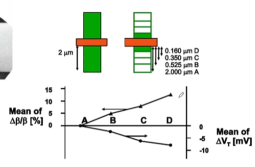
②$WPE$阱偏效应
（1）产生：NWell边缘的离子浓度高
（2）解决：加dummy管，原理阱边缘
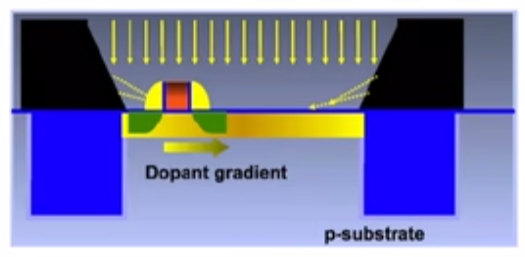
③PPE多晶硅效应
（1）产生：Gate靠近Gate（元器件周围环境）不一致导致刻蚀速度的不同
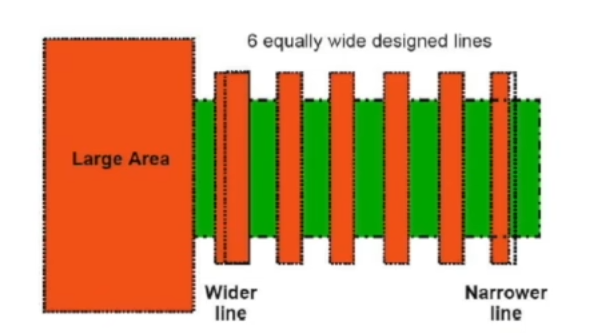
解决方法：
· 加入dummy，让每个Unit Device周围环境一样
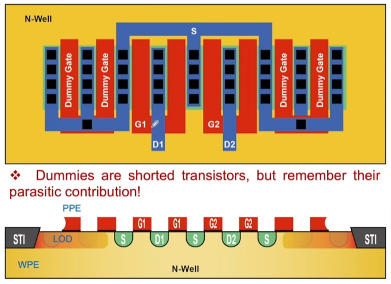
2.Metal over transistor
（1）产生：最后一步注入$H_{2}$清洗掉多余氧原子时，金属层覆盖阻碍了$H_{2}$进入底部；
（2）解决：沟道($mosfet$)上方不要去覆盖金属
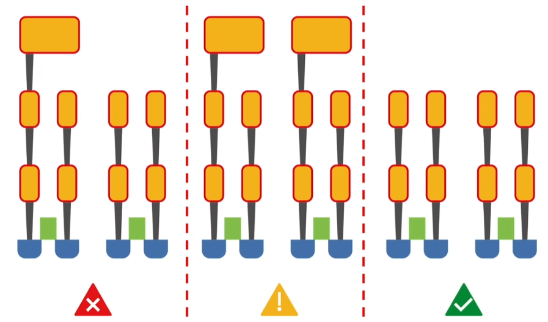
3.Asymmetry：源漏非对称
（1）产生：加工时，离子是倾斜注入的（防止注入过深）
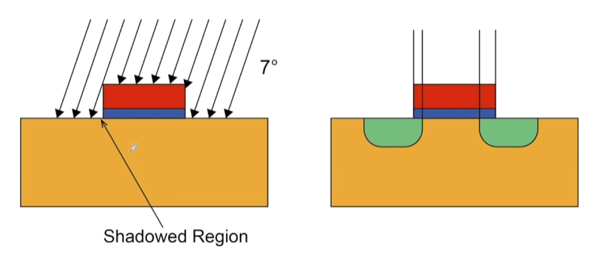
（2）解决：
①A与B的Gate方向应该平行
②对于单个mos而言，可以用finger/multiplier进行拆解（D、S都减去一部分，比值不变）
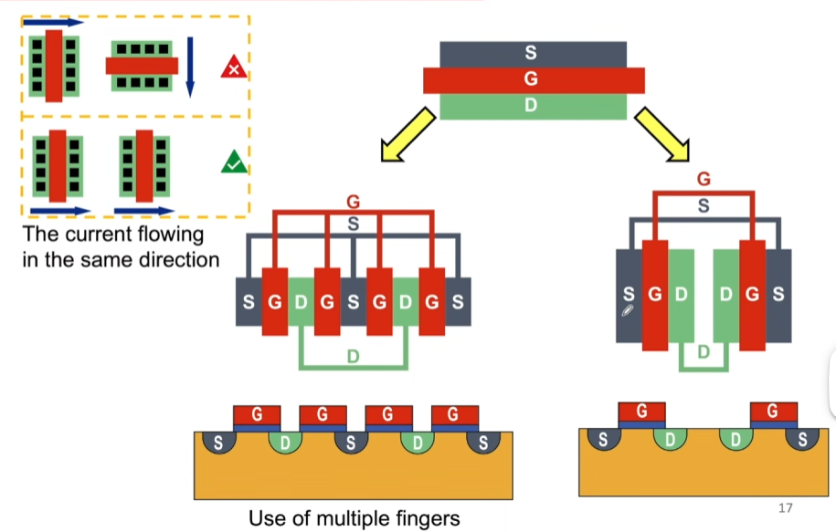
4.Gradients 热梯度
（1）产生：热梯度使得$t_{ox}$不同，栅氧层厚度不同，使得$V_{th}$就不同
（2）解决：
①一维度的情况：共轴心
· 叉指排列为：AABBAABB（轴心靠近）/ABBAABBA（轴心重合）
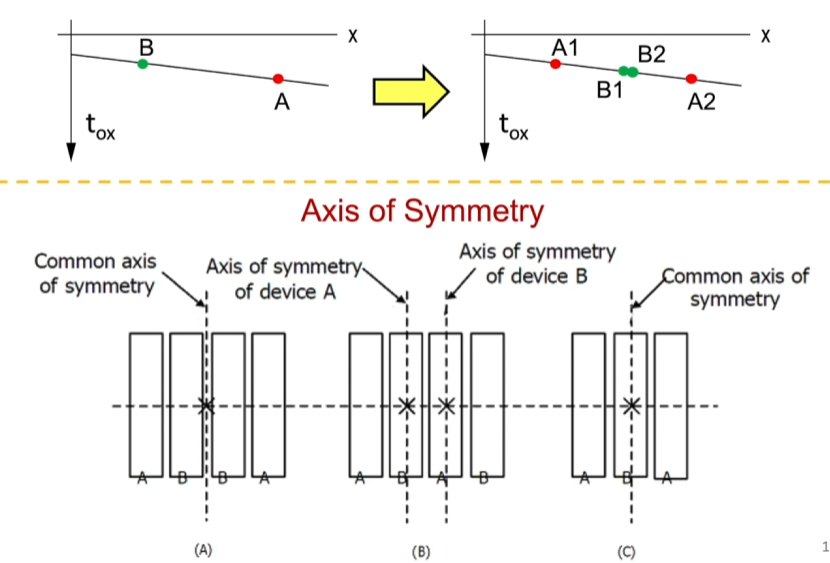
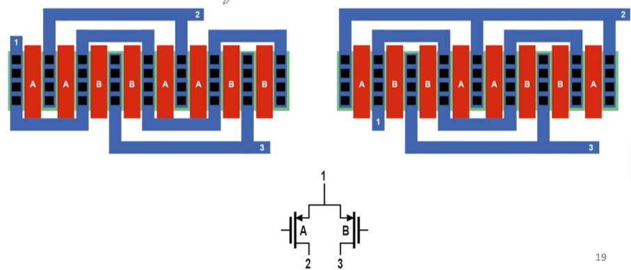
②二维的情况：共质心
· 拆成更多的管子则可以抑制高阶的非线性梯度
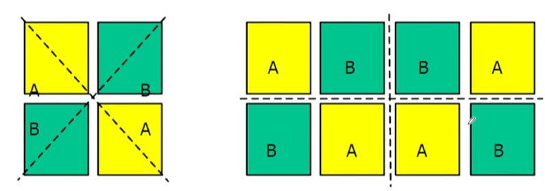
常见的排列：
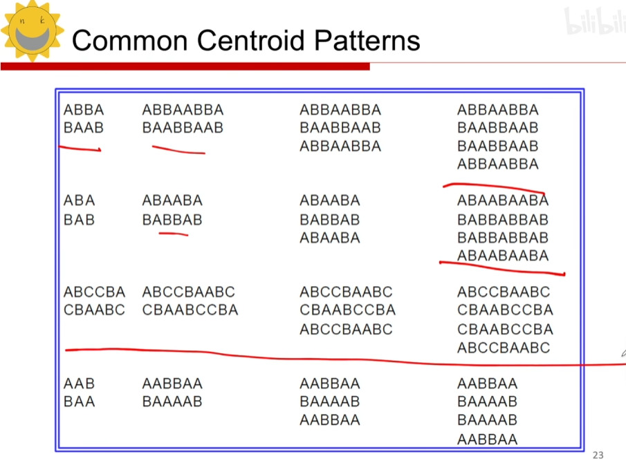
一个例子（用了poly层连线）
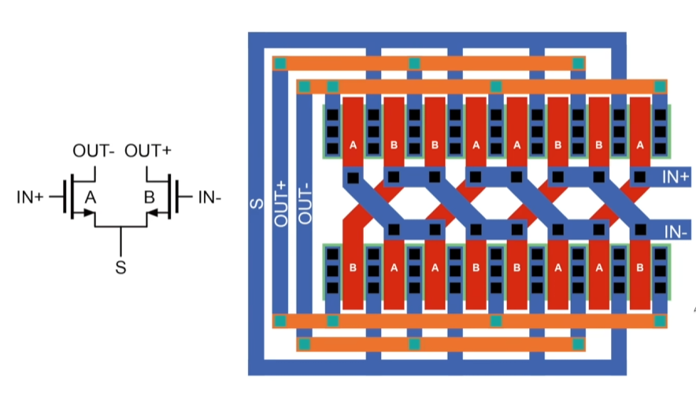
5.Side etching(侧边刻蚀)
（1）产生：刻蚀时造成元器件的比值特性改变
（2）解决：$UnitDevice$
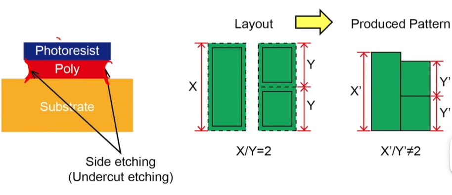
6.Random mismatch随机失配
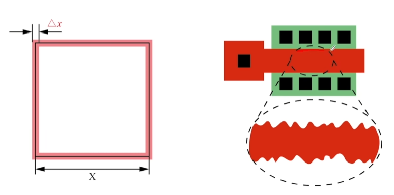
（1）解决：加大尺寸($\sigma _{\Delta P} = \frac{A_{p}}{\sqrt{WL}}$)
二.电容的匹配方法
1.$C_{1}C_{2}$共质心
2.周围要围上dummy（dummy不一定要与$C_{1}、C_{2}$大小相同，需要让dummy每个电容环境一样）
①dummy管一定要短路（上下极板接地）
②dummy管最好用multiplier
③用Unit capacitor
④加guard ring减小电容噪声
★⑤连线长度要相等
⑥要远离power device与应力区（热梯度）
⑦要使用更大的单位电容(Random mismatch)
⑧电源上方要没有Metal线（Metal over transistor）
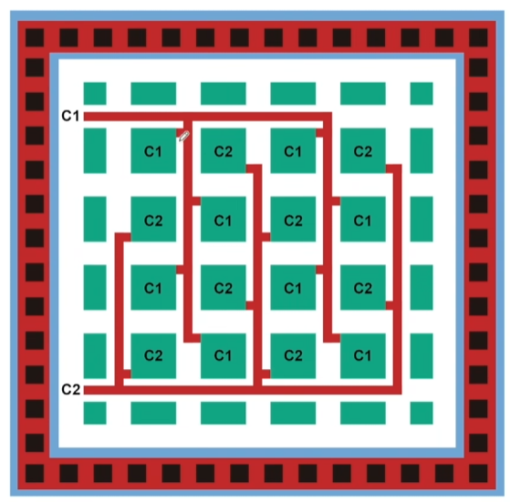
三.Symmetry at Transistor V.S. Symmetry at Top-level
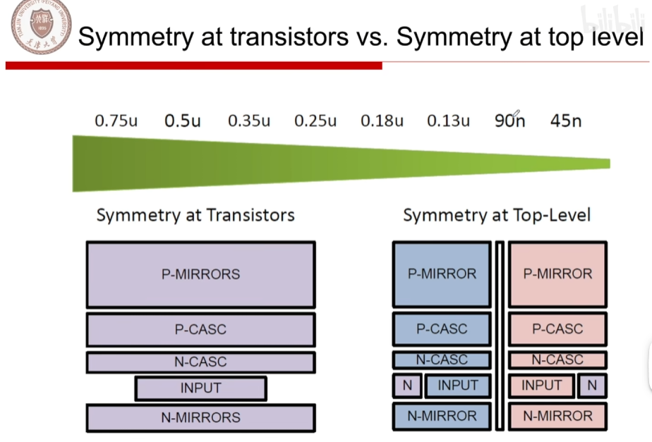